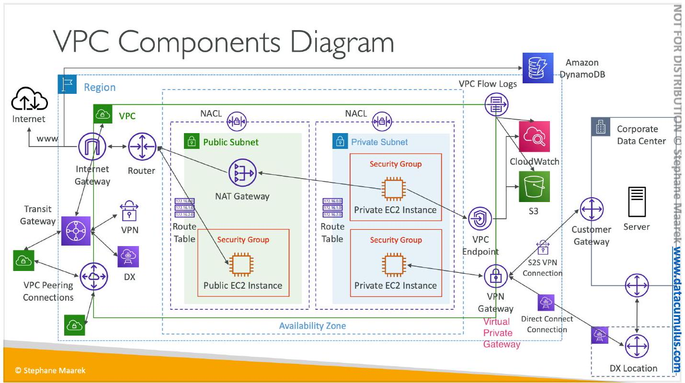
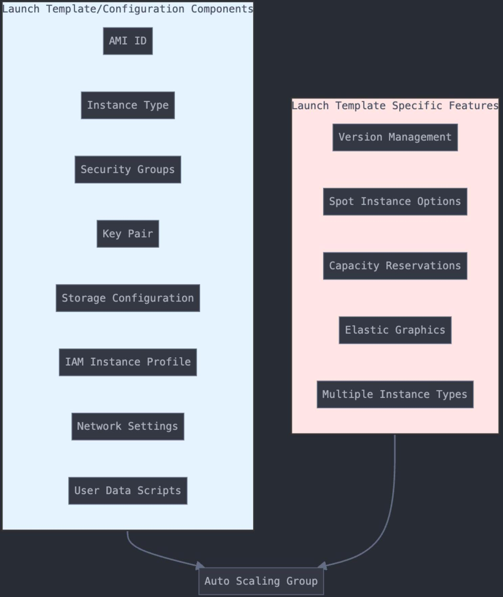
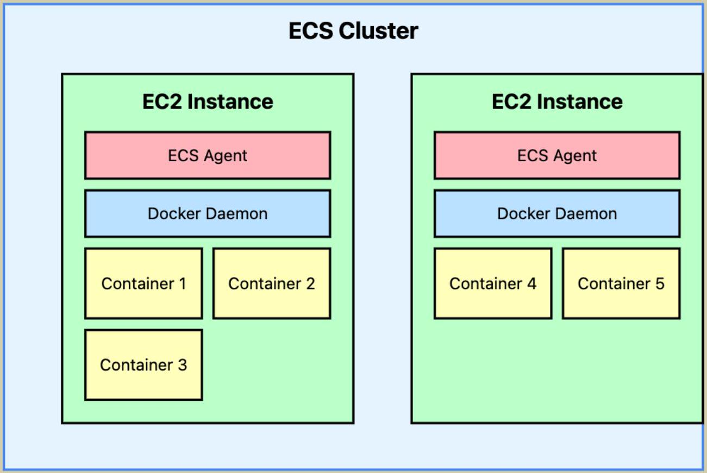
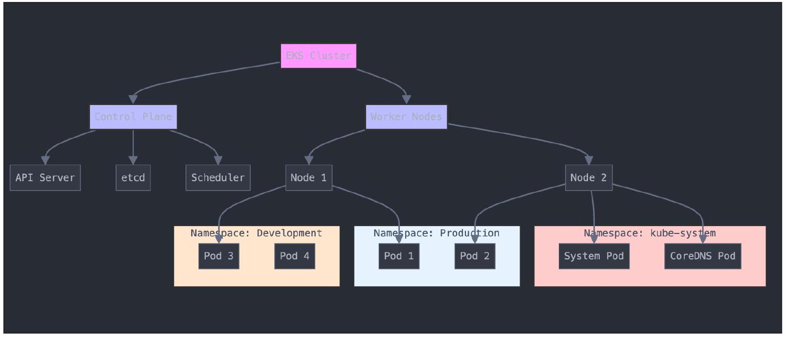
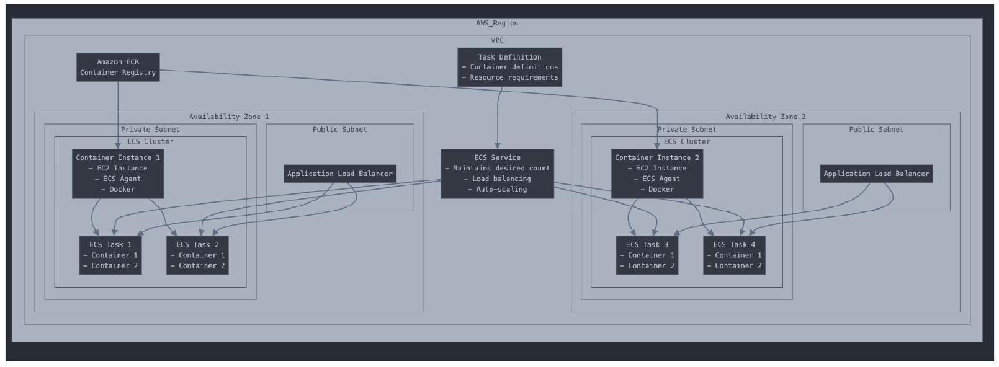
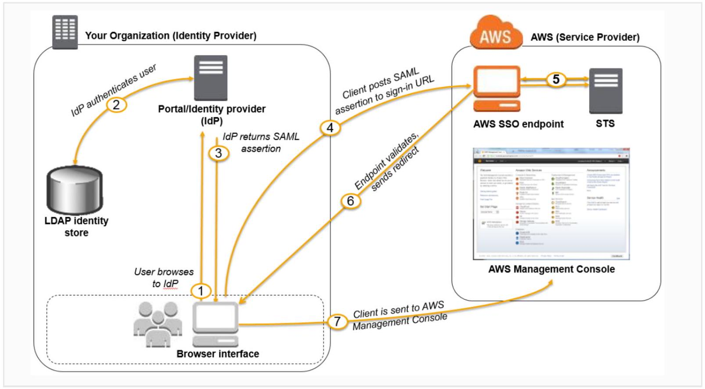

AWS Certified Solutions Architect Associate
AWS Solutions Architect Study Notes
Evaluate AWS networking components
- Public vs private access
- Internet Gateway vs NAT Gateway or NAT instances
- Stateful vs stateless
- Internet Gateway vs NACL
- VPC scope vs Subnet scope
- Internet Gateway vs NACL
- Internet Gateway vs Router
- Internet Gateway handles traffic between VPC and the public internet vs Router distributes traffic to different subnets and components of subnets.
- Connection to AWS service vs Connection to external services vs Connection to other VPCs
- VPC endpoints vs VPN connection vs AWS Peering and AWS Transit Gateway
- The point of the three is to not traverse the raw public internet
- Route table is associated with VPC.
- Each VPC has a default Route table. Each subnet inherits the default route table. But can create a custom route table for a subnet. 1:1 relationship between subnet and route table.
# Custom Route Table 1
Destination Target
10.0.0.0/16 local (Local VPC traffic)
0.0.0.0/0 igw-abcdef12 (Internet Gateway)
- IP address has a DNS associated with it
- A VPC spans all availability zones in the region. We can create one or more subnets in each AZ.

{kind=link}
Amazon EventBridge and CloudWatch:
- CloudWatch is mainly used for monitoring and triggering subsequent actions (SNS, manage EC2 instances, adjust auto scaling)
- Amazon EventBridge builds on top of it, it’s a general event bus. People use EventBridge for intermediate data transformation and filtering.
- With EventBridge, can create different filtering and transformation rules and only send relevant events to each SNS topics.
DNS Resolution and AWS Global Accelerator:
- Can configure for all incoming traffic to Global Accelerator in DNS Resolution
Launch template and launch configuration to use within a autoscaling group
- Launch template is more flexible, support mixed instance types and versioning, spot instance and instance market
- Launch configuration cannot be modified once created, launch template can be modified and autoscaling group will use the latest version
- Can use launch configuration for different AZs, can’t use for different regions

{kind=link}
Autoscaling groups directly manage compute resources:
- On demand Ec2, spot instances, mixed instance types
- ECS container instances, EKS worker nodes
- EBS, ENIs, compute (automatically scaled with instances)
- Auto Scaling Group defines where to launch instances, launch template and launch config decides what to launch
- Dynamic scaling policy: scale based on certain metrics
- Can and should launch auto scaling group over different subnets (in different AZs) within same region
Identity management (idms):
- IAM User: individuals or applications to access AWS resources directly
- IAM Group: group of IAM Users
- IAM Roles: a set of permissions can be assumed by IAM users, AWS services, or external identities
Usage: Granting temporary access, cross-account access, AWS service access
- IAM cross account access: through IAM roles. Account A defines a IAM role and what they can access and who can assume this role (ARN of a user in account B). Account B gives permission to individual account or groups to claim this role.
Static and dynamic files during app startup:
Example static files:
- Program binaries
- Library and dependencies
Example dynamic files:
- Database connections: dynamic depends on which environment the service is in
Example of installing binary files as part of EC2 user data:
A script that
- Fetch database connection details from secret manager store
- Use fetched data to set up corresponding database connection
Difference between Kinesis data stream and data firehose:
- Real time data streaming, analyzing and processing
- Reliable way to deliver streaming data to data lakes, data stores etc.
VPC Sharing vs. VPC Peering
- Share VPC resources with other accounts under the same AWS organization, Account A shares its subnet with B, B can launch resources in subnet
- Set up connections between two VPCs
Amazon CloudFront vs. AWS Global Accelerator
- CloudFront is a DNS service that cache content at edge location to improve scalability and resilience of the service
- AWS Global Accelerator is a routing service the directs each request to the healthiest and closest instances across the world
- Global Accelerator is a service that improves availability and performance
of your applications. Can serve as entry point for Application Load Balancers/NLB in different regions, EC2 instances etc.
Scope of AWS Account, IAM users, IAM groups, IAM roles:
- IAM users and groups and roles are created under a AWS account
Different access control
- IAM policies: centralized management of access control for IAM users, groups and roles under the same AWS account. Service and user level.
- Amazon S3 Bucket Policies: Service or object level for cross accounts specifications.
- Access Control List (ACL): Legacy service for simple, object level permission specification. ACL can be for other services like S3. NACL is one kind that’s attached to the subnet, specifying permissions of the ip.
| Field | Description |
|---|---|
| Rule Number | Identifies the order of rule evaluation (lowest number first, as soon as a rule is matched, no other rules will be evaluated). |
| Rule Action | Specifies whether the traffic is ALLOW or DENY. |
| Protocol | The protocol to which the rule applies (e.g., TCP, UDP, ICMP, or -1 for all protocols). |
| Port Range | The range of ports (e.g., 80 for HTTP, 443 for HTTPS). |
| Source/Destination | The IP address range (CIDR) the rule applies to (e.g., 0.0.0.0/0 for all traffic or 192.168.1.0/24 for a specific subnet). |
| Egress/Ingress | Whether the rule applies to outbound (egress) or inbound (ingress) traffic. |
Security Groups: for specifying network traffic to EC2, on instance level
Amazon Snow Family:
- Snowball edge can directly transfer to AWS Glacier flexible retrieval
- Meant to migrate large amount of data
- Shouldn’t use site to site vpn connection as the bandwidth is very limited
- Meant to convert data to S3 first, can use S3 lifecycle policy to migrate further to Glacier
Snowcone: a few TB
Snowball: 10s of TB (Transfer to S3 before transferring to Glacier)
Snow mobile: PB
General differences between instance and managed service:
- Instance supports more customization but requires more management such as load balancing
Different types of security measures in AWS:
- IAM (Identity and Access Management):
- Purpose: Manage access to AWS resources. Define users, groups, roles, and permissions.
- Components:
- IAM Users: Individual accounts with specific permissions.
- IAM Groups: Collections of users with shared permissions.
- IAM Roles: Temporary permissions for applications or users.
- IAM Policies: Define permissions for users, groups, and roles.
- Security Groups:
- Purpose: Control inbound and outbound traffic to EC2 instances.
- Network ACLs (Access Control Lists):
- Purpose: Control inbound and outbound traffic at the subnet level. Stateless.
- VPC (Virtual Private Cloud):
- Purpose: Create isolated network environments within AWS. Includes features like subnets, route tables, and internet gateways.
- NAT Gateway/Instance:
- Purpose: Allow instances in private subnets to access the internet while blocking inbound internet traffic.
- AWS WAF (Web Application Firewall):
- Purpose: Protect web applications from common web exploits and threats.
- NAF can do deep packet inspection on network traffic
- AWS Shield:
- Purpose: Protect against DDoS attacks.
- Types:
- AWS Shield Standard: Protection against common DDoS attacks.
- AWS Shield Advanced: Enhanced protection with additional features and support.
- AWS GuardDuty:
- Purpose: Threat detection service that continuously monitors for malicious activity and unauthorized behavior.
- AWS Macie:
- Purpose: Discover, classify, and protect sensitive data in Amazon S3.
- AWS Inspector:
- Purpose: Automated security assessment service to help improve the security and compliance of applications deployed on AWS.
- AWS Config:
-
Purpose: Track and audit AWS resource configurations and compliance over time.
Sample EC2 config record stored in AWS Config:{ “resourceld”: “i-1234567890abcdef0”, “resourceType”: “AWS::EC2::Instance”, “configuration”: { “instanceType”: “t2.micro”, “amild”: “ami-Oabcdef1234567890”, “securityGroups”: [“sg-0123456789abcdef0”], “keyName”: “my-key-pair”, “iamRole”: “arn:aws:iam::123456789012:role/my-role”, “vpcId”: “vpc-abcde123”, “subnetld”: “subnet-abcde123”, “tags”: { “Name”: “MyAppInstance”, “Environment”: “Production” } } }
- AWS Config can be used to send events to SNS directly.
- AWS Config is a service that enables you to assess, audit, and evaluate the configurations of your AWS resources. Its rules help with enforcement in real time (Any EC2 instances should have a Environment tag). It records each config changes. Can integrate with System Manager for immediate remediation actions.
- It takes snapshots of resource configurations at a point in time.
- AWS Systems Manager:
- Purpose: Manage and automate tasks across AWS resources, including patch management and configuration compliance.
- Without it, you will have to manage each ec2 instance separately. With it, get a unified interface for managing multiple instances
- Automation: automate maintenance tasks
- Run Command: run config commands for multiple instances at once
- Patch manager: automate patch management
- Session manager: accessing EC2 instances without opening more ports
- Parameter store: store configuration secrets. Best for plaint text configuration, application configuration, environment variables, no automatic key rotation. Secrets manager has automatic key rotation.
- AWS Secrets Manager:
- Purpose: Manage and retrieve database credentials, API keys, and other secrets securely.
- AWS Key Management Service (KMS):
- Purpose: Create and control encryption keys used to encrypt data.
- AWS CloudTrail:
- Purpose: Log and monitor API calls made in your AWS account, providing a record of activities for security analysis and compliance.
Firewall in AWS: A firewall is a network security system that monitors and controls incoming and outgoing network traffic based on predetermined security rules. In AWS, firewalls can be implemented through:
- AWS WAF (web application firewall)
- Integration with AWS services: CloudFront, Application Load Balancer, API Gateway, AWS AppSync
- Security Groups (instance-level firewall)
- Network ACLs (subnet-level firewall)
- AWS Network Firewall (VPC-level firewall)
Macie vs. Inspector vs. GuardDuty vs. Detective
- Macie: Data security & privacy. Use Macie’s ml technology to scan and discover PII data and other sensitive data
- Detective: investigate root cause by vulnerabilities detected by other services like GuardDuty. Visualization, impact analysis. GuardDuty finds issues, Detective tells u why and how for GuardDuty findings.
GuardDuty vs. Inspector
| Service | Primary function | Scope | Data sources | Use cases |
|---|---|---|---|---|
| Amazon GuardDuty | Threat detection & monitoring | Entire AWS environment | CloudTrail, VPC Flow Logs, DNS Logs |
|
| Amazon Inspector | Vulnerability assessment | EC2 instances & container images | System calls, package manager DB, network reachability |
|
Three in memory caches:
- ElasticCache for Redis
- ElasticCache for Memcache
- DynamoDB Accelerator (DAX)
- notes: in memory cache cannot be used to serve static content
Amazon S3 Transfer Accelerator is to be used between end user and a S3 bucket, not for syncing between buckets
AWS ECS cluster
AWS Cloud
{kind=link}

- Corresponding terms in EKS are worker nodes, pods, containers
- ECS Cluster span across multiple AZs but not regions
Backup/disaster recovery versus. high availability
- First is about recover lost data. Not an instant process, service still has down time
- The other is about deploying in multiple AZ, when one AZ is down, others can pick up immediately
Database level features like Oracle built in RMAN might not be directly available in AWS as AWS manage these services themselves
S3 bucket policy versus access points:
- Bucket policy is one per entire bucket, and access points are more granular and can have multiple per bucket for different targets
- Each access point has its unique hostname and endpoint
- Bucket policy is easier for cross account access and access points is for restricting requests from specific VPC
Full instances of auto scaling takes minute because need to spin up new instances, lambda can scale much faster, within seconds. Lambda can absorb
reasonable burst of traffic for
15
−
20
min
| Storage class | Designed for | Availability Zones | Min storage duration | |
|---|---|---|---|---|
| 0 | Standard | Frequently accessed data (more than once a month) with milliseconds access | ≥ 3 | - |
| ◯ | IntelligentTiering | Data with changing or unknown access patterns | ≥ 3 | - |
| ◯ | Standard-IA | Infrequently accessed data (once a month) with milliseconds access | ≥ 3 | 30 days |
| O | One ZoneIA | Recreatable, infrequently accessed data (once a month) stored in a single Availability Zone with milliseconds access | 1 | 30 days |
| O | Glacier Instant Retrieval | Long-lived archive data accessed once a quarter with instant retrieval in milliseconds | ≥ 3 | 90 days |
| O | Glacier Flexible Retrieval (formerly Glacier) | Long-lived archive data accessed once a year with retrieval of minutes to hours | ≥ 3 | 90 days |
| O | Glacier Deep Archive | Long-lived archive data accessed less than once a year with retrieval of hours | ≥ 3 | 180 days |
| O | Reduced redundancy | Noncritical, frequently accessed data with milliseconds access (not recommended as S3 Standard is more cost effective) | ≥ 3 | - |
Cannot transfer to Standard IA or IA One zone before it has been stored at current storage class for 30 days.
Expedited retrievals in Glacier which will allow you quickly access data is available.
For monitoring:
- EC2 built in detailed monitoring doesn’t capture memory utilization and disk I/O while Enhanced Monitoring for RDS instances capture these
- So for normal EC2 instances, we can install CloudWatch agents, this gives similar info as Enhanced Monitoring for RDS
Why the difference?
- Managed Service: RDS is a managed service, so AWS can implement more comprehensive monitoring without requiring user intervention.
- Use Case: Databases often require more detailed monitoring due to their critical nature and complex performance characteristics.
- Customization: EC2 instances can run a wide variety of applications, so AWS provides a more general set of metrics, leaving it to users to implement more detailed monitoring if needed (e.g., using the
CloudWatch agent).
AWS Key Management Service and CloudHSM:
The AWS Key Management Service (KMS) custom key store feature combines the controls provided by AWS CloudHSM with the integration and ease of use of AWS KMS. You can configure your own CloudHSM cluster and authorize AWS KMS to use it as a dedicated key store for your keys rather than the default AWS KMS key store. When you create keys in AWS KMS you can choose to generate the key material in your CloudHSM cluster. KMS Keys that are generated in your custom key store never leave the HSMs in the CloudHSM cluster in plaintext and all AWS KMS operations that use those KMS keys are only performed on your HSMs.
Cross account access & cross account resource sharing
- IAM is not too relevant. It’s for within same account, permission management
- RAM is for resource sharing across accounts, not within the same account
- Differences between AWS Control Tower and AWS Organization
- Organizations are the foundation of multi accounts management
- AWS CT is built on top of it for automated initial account set up (landing zone), account factory, strict governance, compliance, and monitoring.
Storage Gateway vs. DataSync
Storage Gateway is for ongoing, hybrid cloud storage scenarios with frequent data access needs. Storage Gateway cannot transfer to AWS Glacier or AWS Glacier Archive. Needs to transfer to other S3 standard tier first then move to Glacier.
Mostly used for data replication. File gateway, volume gateway (cached and stored volume types), tape gateway .
DataSync is for efficient, large-scale data transfers, ideal for migrations or periodic large data movements. DataSync can directly transfer to Glacier layer. Mostly used for data migration.
Route 53:
Geoproximity: location of users and hosts.
Use case: assign user traffic to hosts with closest distance, with fine grained control on how much traffic route to a region.
Geolocation: location of users
Use cases: restrict some content for users in some areas
Application layer versus transport layer:
- Application load balancer vs. network load balancer
- Have request header info such as path, host versus have ip and port info
only
Gateway endpoint versus interface endpoint
- Both are used to set up private ip connections between two instances
- Two types of VPC endpoints
- Only for S3 and dynamoDB versus all others
- Free to use versus cost money
Instance store versus EBS
- Ephemeral, physical attached to host, data lost on stop/terminate, price included in instance, very high I/O performance
- Persistent, network attached, separate price, consistent performance
ENI is a logical network component attached to EC2 instances:
- Provide primary private ipv4, several secondary private ipv4, one elastic ip per private ipv4, one public ipv4
- Elastic ip is a static public ipv4 address allocated to my aws account
- EIP can be attached to different AWS resources:
- To EC2 directly, or to network interface (ENI) attached to the instance
- NAT Gateway, requires its own EIP
- Network load balancer
- Cannot attach EIP to ALB
- Private and public ipv6
Kinesis data stream:
- Data is expected to read/write real time. So only store for 24 hours. (24 hours by default, now can store up to 365 days)
- If need temporal storage, use SQS (default 4 days, 14 days max)
- Kinesis requires provisioning of shards. SQS is a cheaper option since only pay for what you use.
Tags are key value pairs used to organize AWS resources. Like environment: {dev, uat, prod}
Config rules are a lot more customizable, we could have a custom Config rule called “prod-instance-type-check” that does the following:
- Checks all EC2 instances tagged with “Environment”: “Production”
- Ensures they are using approved instance types (e.g., c5.xlarge, m5.2xlarge)
- These rules run every day by default and can be configured to run every hour
EBS volume type:
General Purpose (SSD) is the new, SSD-backed, general purpose EBS volume type that is recommended as the default choice for customers. General Purpose (SSD) volumes are suitable for a broad range of workloads, including small to medium-sized databases, development and test environments, and boot volumes. Provisioned IOPS (SSD) volumes offer storage with consistent and low-latency performance and are designed for I/O intensive applications such as large relational or NoSQL databases. Magnetic volumes provide the lowest cost per gigabyte of all EBS volume types.
Magnetic volumes are ideal for workloads where data are accessed infrequently, and applications where the lowest storage cost is important. Take note that this is a Previous Generation Volume. The latest low-cost magnetic storage types are Cold HDD (sc1) and Throughput Optimized HDD (st1) volumes.
EBS:
- Root volume: contains os that is used to boot the instance, like any primary disk that contains your OS on any computer. Has delete on termination flag on by default.
- Any other EBS volume: by default is persistent (has delete on termination flag off)
Difference between standby replica and read replica:
- Automatic failover, same or different AZ, same or different region
- Same or different AZ, same region
Ensures data delivery ordering:
- Kinesis data stream
Kinesis firehose, SQS, SNS all don’t guarantee ordering. SQS might have dupes too. SQS FIFO dedupe. AWS Step function guarantees no dupe tasks.
Storage optimized versus memory optimized:
- High I/O, best used for NoSQL databases like Cassandra and MongoDB
- Optimized for RAM
SQS long vs. short polling:
- Long polling wait up to 20 seconds. Only return response when there’s message available for consumption or timeout. It requires less CPU usages, saves cost.
Amazon aurora:
- Separates compute and storage. Storage is automatically highly
available.
- In terms of failover, it’s the compute that needs to get updated.
- User needs to explicitly create aurora replicas. If there’s replicas available. When failover, aurora updates CNAME records to point to other ones. If replica is not available and using Aurora serverless, aurora tries to create a replica in a different AZ automatically. If no replica is available and is not running Aurora serverless, Aurora first tries to create a replica in the same AZ with best effort.
When you create an encrypted EBS volume and attach it to EC2, encryption happens at EC2. All these are encrypted:
- Data at rest
- Data in transit
- Snapshots
- Volume created from snapshots
Amazon EKS:
- EKS Cluster:
- Control Plane: AWS manages this for us. The brain of the cluster.
- Worker nodes: each node is an EC2 instance
- Pod: smallest deployable unit. Containers inside share storage and network resources. Usually run a single container but can run multiple related containers.
- Container: packaged application code and dependencies
- Operates within 1 region, can span multiple AZ
- Important exam topics:
- EKS Networking:
- Uses VPC CNI for networking
- Container Network Interface: ENI attached to the node is CNI
- Networking plugin that brings networking properties of EC2 instance to pods, assign VPC IP addresses and provides native VPC networking for containers
- Each pod gets an IP address from your VPC
- Supports AWS security groups integration
- EKS Security:
- Integration with IAM for authentication
- Uses RBAC (Role-Based Access Control) for authorization
- Use aws-auth ConfigMap to map IAM roles to Kube users. EKS supports both AWS IAM and Kubernetes native RBAC
- Roles: define permissions within a namespace
- ClusterRoles: Define cluster-wide permissions
- Secrets management using AWS Secrets Manager or Parameter Store
- Scaling:
- Karpenter/Cluster Autoscaler for nodes
- Horizontal Pod Autoscaler for pods
- Vertical Pod Autoscaler for pod resources
- EKS Storage:
- Support for EBS volumes
- EFS for persistent storage
- Amazon FSx for Lustre
- Important exam scenarios:
- When to use Fargate vs EC2 nodes
- High availability configurations
- Cost optimization strategies
- Integration with other AWS services
{kind=link}

Virtual Private Gateway:
AWS’ side endpoint for establishing hybrid connectivity
Logging in AWS:
- CloudWatch logs & agents
- CloudWatch agents can be installed on EC2 instances and onpremise servers
- System level logging and other customized logging
- Metrics and alerts
- CloudTrail logs
- Records API activity and actions taken in my AWS account
- Auditing & compliance
- Logs are stored in S3 by default
- Logs arrived in S3 within 15 min of any api activity
- Logs can also be configured to store in CloudWatch for real time monitoring and metrics and alarms. And CloudTrail Lake, which is a managed data lake with enhanced search and analysis with SQL-based queries
- Has two types of logs
- Management events: Management operations happened to AWS resources in your AWS accounts. Create a S3 bucket, delete bucket, describe a EC2 instance etc.
- Data events: track changes made to actual data within these resources: S3 get object, put object, delete object etc.
- Use S3 server side encryption
- S3 access Logs
- Must be enabled per bucket
- Detailed records of requests made to the bucket
- Logs stored in a different bucket
- Which user is accessing what data
- Compliance and auditing requirements
- VPC flow logs
- Must be enabled at VPC level, subnet level, or ENI level (smaller the scope, more cost saving it is. ENI is most granular, captures traffic for specific network interfaces)
- Capture IP network traffic information
- ELB access logs
- Must be enabled per load balancer
- Logs stored in a S3 bucket
- Debug client connectivity issues
- Latency performance optimization- records response time, captures TLS handshake timing
- RDS enhanced monitoring
- Must be enabled per RDS instance
- Provides metrics at 1-second granularity
- Gets OS-level metrics directly from RDS instance
Additional important logging features about CloudWatch logs:
- CloudWatch Logs Insights: Allows interactive querying and analysis of log data directly
- Log Groups & Log Streams: help organize logs in a hierarchical structure
IAM policy evaluation policy:
- By default, everything is denied
- Explicit ALLOW overrides the default
- Explicit DENY overrides everything
Different IP and DNS:
- Elastic IP: only public fixed ip. Cost money when not attached to running instances, can be moved between instances
- Public IP: changes when instance restarts
- Private IP: fixed within VPC
Different DNS records:
Not just AWS:
- A record: point to specific ipv4, can point to static IP or public ip
- AAAA record: point to specific ipv6
- CNAME: map subdomains to domains. Doesn’t do ip mapping, only domain name mapping. Cannot point to root domain (Zone apex). Can only do www.example.com (subdomain) -> example.com but not example.com -> anything.
- DNS name: www.example.com
- www is subdomain, example.com is domain name or zone apex. CNAME is not allowed at apex zone, always use A record AWS:
- ALIAS record: point to specific AWS resources. AWS thing. More recommended since lots of AWS services’ ip are dynamic.
- Alias with type A: ipv4
- Alias with type AAAA: ipv6
AWS AppSync pipeline resolvers: aggregate data from different sources. Chain a few requests that needs data from multiple resources and combine responses. Can used to grab data from the same AWS data storage service but different tables- instead of several separate requests, combine to one request.
AWS WAF rules are evaluated from top to bottom. So if want to allow a specific ip from a country but want to block others from that country. Could have a ALLOW rule for that ip set with that ip. First rule that matches the request is applied.
VPC endpoints are region specific
In route table, you specify target and destination. Destination is the CIDR block of the target network. Target is the next stop for traffic like a peering connection, internet gateway.
Pricing models of EC2 instances, from cheapest to most expensive:
- Spot instances
- Savings Plans
- Agrees to a spend rate per hour- $5/ h (agree to that at least you will use 5 per hour resources). If actual spending is less than agreed spend rate, extra can be used for other things. Can switch underlying resources- different instance families, sizes, operating systems, and even AWS services (Fargate, Lambda)
- Reserved Instances
- On-Demand instances
- Dedicated hosts/instances
CloudFront origin group:
- Allows to define multiple origins and a failover mechanism
- If primary origin is unavailable, CloudFront automatically routes to the second
Access keys are necessary when new IAM users try to send api requests programmatically
EBS Encryption by default is a region specific behavior, not by each EBS. You enable EBS encryption for us-east-1.
Remote Desktop Connect is TCP/UDP port, which is 3389
| 22 | SSH (Secure Shell) | Secure remote login and file transfer (SCP/ SFTP). |
|---|---|---|
| 53 | DNS (Domain Name System) | Resolves domain names to IP addresses. |
| 80 | HTTP | Unencrypted web traffic. |
| 8080 | HTTP (Alternate) | Alternate port for web servers (often used in development). |
| 443 | HTTPS | Secure web traffic, encrypted with SSL/ TLS. |
| 25 | SMTP | Sending emails (often replaced by 587 or 465 for secure email). |
|---|---|---|
| 143, 993 | IMAP, IMAPS | Email retrieval (standard and secure versions). |
| 3306 | MySQL | Default port for MySQL databases. |
| 5432 | PostgreSQL | Default port for PostgreSQL databases. |
| 3389 | RDP (Remote Desktop Protocol) | Remote desktop connections to Windows systems. |
Important ports:
- FTP: 21
- SSH: 22
- SFTP: 22 (same as SSH)
- HTTP: 80
- HTTPS: 443
vs RDS Databases ports:
- PostgreSQL: 5432
- MySQL: 3306
- Oracle RDS: 1521
- MSSQL Server: 1433
- MariaDB: 3306 (same as MySQL)
- Aurora: 5432 (if PostgreSQL compatible) or 3306 (if MySQL compatible)
Target servers listen to these ports for certain standards
S3 file gateway is an interface - ingest SMB and NFS file formats and store as objects. Retrieve objects as SMB and NFS file formats again. When setting up gateway, can specify a disk space as local cache. Write and retrieve from cache first, which is pretty instant, eventual consistency with S3.
| Concept | Amazon ECS | Amazon EKS |
|---|---|---|
| Container Orchestration Engine | ECS Engine | Kubernetes |
| Compute Resources | ECS Cluster (EC2 or Fargate instances) | EKS Cluster (EC2 instances or Fargate) |
|---|---|---|
| Containerized Application | ECS Task (individual container) | Pod (container within a Kubernetes service) |
| Scaling | ECS Service Auto Scaling (based on metrics) | Kubernetes Horizontal Pod Autoscaler (HPA) |
| Task Definition | Task Definition (specifies container image, resources, etc.) | Pod Specification (YAML file describing Pods) |
| Container Networking | awsvpc Mode (Each task gets its own ENI) | Kubernetes CNI (e.g., AWS VPC CNI plugin) |
| Routing Traffic | Application Load Balancer (ALB) Target Groups | Kubernetes Service (with internal/external load balancer) |
| Logging & Monitoring | CloudWatch Logs, CloudWatch Metrics | CloudWatch Logs, Prometheus, Metrics Server |
| IAM Integration: ECS/ EKS to use | IAM Roles for Tasks | IAM Roles for Service Accounts (IRSA) |
| Role-based Access Control: for other resources talk to ECS/ EKS | IAM Policies (for tasks and services) | Kubernetes RBAC (Role-based Access Control) |
| Storage | EFS, EBS, S3, or other AWS storage options | EFS, EBS, S3, or other AWS storage options |
| Control Plane Management | Fully Managed (no control plane management) | Fully Managed (with Kubernetes API Server) |
How ECS work: user creates a docker image -> update to ECR -> create a task / define a task (with multiple containers maybe) -> set up a cluster -> specify deploy this task to the cluster.
If for long running jobs: can use ECS service to specify minimum running tasks, integrate with load balancer, set up alerting and monitoring
{kind=link}

AWS Lex versus AWS Comprehend:
- Conversational chatbots or voice agent versus key insights like sentiment, key phrases
- Intent analysis (what is used to build alexa) versus. none
AWS AppStream: managed application streaming service that allows you to stream desktop applications to other devices. Instead for users to download apps on their local desktop, they can access these desktop apps on web browser.
For CloudFormation template, only Resources field is required. All others are optional: Format Version, Description, Metadata, Parameters, Mappings, Conditions, Transform, Outputs.
For S3, you can set separate permissions for each object uploaded. By default, it’s owned by whoever uploads it despite bucket is created by someone else. Object owner needs to explicitly grant bucket owner access.
Service Control Policies in AWS Organizations lets org put restriction on what IAM roles and users and groups can access. SCP sets resource permission boundary.
Aurora cluster cloning can be a great tool for database replication. Allow you to create a copy instantly without affecting the performance of the current database. Copy on write, performant cloning but also mean deleting the original cluster will break something.
Cluster placement group is a logical grouping of instances. They have a higher throughput and lower latency. A cluster placement group can span multiple VPCs in the same region. It’s suggested to launch all instances and of same type together. Otherwise we risk having insufficient capacity error.
AWS Beanstalk actually supports deployment of web applications from docker images. Service Autoscaling, load balancing, and monitoring are all built in. With ECS, they aren’t enabled by default. Beanstalk support web applications written in various server languages.
Container mount point: location within a container’s filesystem where external storage is attached or mounted. Mounting storage allows containers to:
- Share data with other containers or applications
- Persist data beyond lifecycle of the container
- Access external data sources or repositories
Available container mount points: (mostly are file systems)
- EFS
- EBS
- Amazon FSx
- Docker Volumes
- Amazon S3 (via tools like S3 FUSE)
- Ephemeral Storage (Fargate)
Data lake in AWS:
- Store structured and unstructured data at any scale.
- Actual lake is S3 and AWS Lake Formation is where we store metadata, fine-grained access control etc. S3 is access controlled by Lake Formation.
- Lake Formation has data filters that control column level access
- AWS Lake Formation Blueprints are designed to automate the process of data ingestion into the data lake
- Load only new data
- Support different data sources: relational, S3, streaming data sources, NoSQL
Lambda functions:
Execution roles: grant function access to other AWS resources
Resource-based policy: give other AWS accounts access to manage lambda functions.
NLB itself operates at the network layer, but supports HTTP/HTTPS health checks to evaluate target’s application-layer responsiveness. NLS itself cannot load balance https requests, like if multiple http requests hit the load balancer, it won’t be able to distribute them away. Pick ALB if application needs url based routing or host name based routing.
Message MQ
Use cases:
- Bidirectional communication or persistent connections are essential
- Advanced messaging features such as message routing
- Migrating existing brokers like ActiveMQ and Rabbit MQ.
In Amazon MQ for RabbitMQ, a cluster broker deployment set up is recommended to ensure high availability.
Active/standby is often used for ActiveMQ
Compute Optimizer: gives recs on what resources have been over and under provisioned. Saves money and improve performance. Supports EC2 Auto Scaling group, Amazon EC2, Amazon EBS, AWS Lambda functions.
AWS Transfer Family:
- Transfer files to S3 and other data storage using FTP protocols: SFTP, FTP, FTPS, HTTPS etc. ’
AWS Data Exchange is a data marketplace and management service that simplifies the discovery, subscription, and usage of third party data sets.
Storing secrets in AWS:
- AWS Secrets Manager: secrets
- AWS Systems Manager Parameter Store: plain text, environment variable
Athena can use AWS Glue Data Catalog to get table metadata so it knows how to read, find, and process the data you want to query.
A managed prefix list is a set of one or more CIDR blocks. Could be easier to maintain security groups. Can share this with other AWS accounts using RAM.
Four elastic load balancers:
- NLB
- ALB
- Gateway Load Balancer
- Classic Load Balancer. AWS only recommends using the classic load balancer if the application is built with Amazon Elastic Compute Cloud (Amazon EC2)
- Cross zone balancing
EMR cluster:
- Master node: manage cluster resources, allocate tasks to core and task nodes, single instance per cluster
- Core nodes: stores and process tasks, runs HDFS DataNode, actual run mapreduce tasks
- Task nodes: doesn’t store data, just as extra compute resources
FSx is a high performance file system.
Different FSx file systems:
- FSx for NetApp ONTAP: supports both NFS and SMB
- FSx for OpenZFS: wide range of workloads such as big data analytics, media processing, and content repositories. Supports NFSv4.1 protocol and provides feature like data deduplication, data compression, and snapshots for improved storage efficiency and data protection. (TODO: check differences between SMB and NFS & NFS and NFSI)
- FSx for windows file server: Active Directory integration, supports SMB which make it compatible for windows applications
- FSx for Lustre: low latency access to data, high throughput, high IOPS. For compute intensive workloads, such as HPC, machine learning, and video processing. Native integration with S3.
Data transfer between EC2, RDS, Redshift, ElasticCache instances, and Elastic Network Interface in the same AZ is free.
AWS Outposts: extending AWS infra to on-premises data centers, expensive and complex, doesn’t guarantee low-latency
AWS Wavelength Zones: designed for 5 G mobile edge computing, located within telecom provider networks
AWS Local Zones: extend AWS infra closer to end-users, local zones are usually in highly populated place, provide low-latency, can extend VPC to local zone
1Access keys are for programs running out of AWS for example to access AWS resources. AWS resources accessing each other should use IAM role.
Presigned S3 url. As long as you have the url you can interact with S3 or some objects. Even no need to have a AWS credentials.
ECS Agent uses EC2 Instance profile to talk to ECS Service, ECR, Cloudwatch logs ALB is recommended to integrate with tasks.
Fargate + EFS = serverless
Amazon S3 cannot be mounted to ECS tasks
DynamoDB gateway is deployed to VPC and associated with route table. So when applications wants to connect to database, it uses the private ip address associated with the gateway and router sends traffic via non public internet. DynamoDB Backup is only free and available for replication within same AZ. Cross account and region replication needs AWS Backup.
DynamoDB stream is ordered. DynamoDB stream + lambda is classic. DynamoDB Autoscaling is not enabled by default.
Amazon S3 server side encryption: you request S3 to encrypt data before saving it to disk.
Or client side encryption: client is responsible for encrypting and only send to S3 encrypted data.
EBS:
EBS encryption is a region specific feature. And doesn’t support asymmetric keys. Even if they support you to specify a symmetric key for snapshot copy operation, it’s still not recommended if not necessary as the process is highly manual. EBS volume supports live configuration changes in production, which means I can modify volume size, volume type, and IOPS capacity without service interruptions.
Amazon Data Life Cycle manager BLOCK STORAGE IS EBS.
Can specify RAID 0 as a configuration for EBS and instance store. RAID 0 improves I/O performance by distributing the I/O across the volume in a stripe. RAID 1 is for data mirroring.
EFS:
POSIX: OS interface. Applications and file systems use methods defined on this interface to implement their features.
Hierarchical directory via NFSv4 protocol. Highly scalable can accessed by thousands of servers in multiple AZs.
One of the major use cases of EFS is container services.
Load balancer:
- Cross zone load balancing: each instance in all AZs receive same amount of traffic
- Target groups is a term for load balancer
AWS WAF: rules are specified with Web ACL.
Can enable ELB access logs
IAM:
IAM Identity Center: formally known as Amazon SSO. Only supports SAML 2.0 Manage access across AWS accounts, Cloud applications, custom applications
{kind=link}

An example IdP could be Microsoft Active Directory Federation Service.
Web Identity Federation is just to verify ur identity via Google, Facebook, Apple etc.
Access keys are for programatic access.
Suspicious access pattern - GuardDuty
IAM policy works with SAML, STS, or a custom identity broker, not LDAP.
Lambda functions:
- if deployed lambda functions reach VPC ip addresses or ENI limits, cannot scale more, has EC2ThrottledException error.
- When deploy lambda functions in ur VPC, you attach ENI on it, therefore lambda scaling is limited to number of ENIs
- Lambda is considered the most cost effective, as you literally pay for how many requests and processing time you use, rounded to closet 1 second.
RDS:
- Can authenticate to RDS and Aurora using IAM database authentication, works with MySQL and PostgresSQL.
- RDS generates an authentication token on request and it’s valid for 15 min
- RDS read replica is asynchronous replication, and standby replica is synchronous
S3:
Intelligent tiering only moves data to and from IA to standard, can’t move to glacier.
VPC:
- Can have ipv4 only, ipv4 + ipv6 addresses VPC, no ipv6 only VPC
- If start a ipv6 only subnet, only allow for non-nitro instances
CloudFront Match Viewer protocol policy: communicate with origin with http or https depends on whichever user uses.
- Origin Access Identity. Create to only allow access to S3 via CloudFront.
Amazon simple email is more for customers- template for transactions, email campaign, bulk email
Redshift spectrum allows u to query on S3 without having to import all data to Redshift.
When you specify to use Amazon Aurora, it’s usually composed of a cluster of instances. When you specify a connection to the cluster, you specify through an endpoint. There’s primary endpoint for write and update and read endpoint for load balancing all query requests.
AnyCast IP: a static ip that receives requests and forward to the geo closest server. CDN, CloudFront
Source attribute in a security group rule could be an ip, a security group id, a prefix list
AWS Database Migration service promises no downtime. Taking snapshots or promoting a read replica to primary all have some unavailable time.
AppFlow is a service that helps transfer data between Saas - salesforce, Zendesk to AWS
Transit Gateway can connect traffic among VPCs, VPNs, and on premises data centers.
SSH, FTP uses TCP. TCP reliable, ordered packets.
Amazon Workshop - run virtual desktops in AWS
CloudFront origin shield help reduce load of an origin (S3) by having a caching layer in the front.
For stopped and hibernated EC2 instances, you only pay for EBS and EIP.
Private Link: one VPC connect to a specific AWS service in another VPC using VPC endpoint. One direction connection.
VPC peering: direct connection between two VPCs, bidirectional.
AWS Control Tower vs. AWS Organizations
| Feature | AWS Control Tower | AWS Organizations |
|---|---|---|
| Multi-Account Setup | ✓ Yes (automated) | X No (manual setup) |
| Security Guardrails | ✓ Yes (pre-configured & custom) | X No |
| IAM Identity Center (SSO) Integration | □ Yes | No |
| Account Factory | □ Yes (automated account creation) | No |
| Centralized Logging & Monitoring | □ Yes | No |
| Customization | V Yes (Guardrails, OUs, policies) | V Yes (Custom SCPs) |
|---|
| Feature | AWS Trusted Advisor | AWS Well-Architected Tool |
|---|---|---|
| Purpose | Optimizes cost, performance, security, and fault tolerance of AWS resources. | Evaluates and improves cloud architecture based on best practices. |
| Scope | Checks AWS resource configurations (EC2, S3, IAM, RDS, etc.). | Reviews overall cloud architecture (design decisions, resilience, security). |
| Focus Areas | Cost optimization, security, fault tolerance, performance, and service limits. | Well-Architected Pillars: Operational Excellence, Security, Reliability, Performance Efficiency, Cost Optimization, and Sustainability. |
| Assessment Type | Automated checks and real-time recommendations. | Manual selfassessment guided by AWS best practices. |
| Who Uses It? | Cloud administrators, DevOps engineers managing AWS resources. | Solutions architects, cloud engineers designing AWS workloads. |
| Automation Level | Fully automated provides real-time alerts and reports. | Partially automated requires manual input and review. |
| Customization | Limited - predefined checks. | Custom lenses available for specific industry use cases. |
| Reporting & Insights | Generates resourcespecific recommendations. | Provides holistic architectural reviews and guidance. |
- Evaluation order:
EC2 Security groups: everything denied by default, all allow security groups rules are evaluated together with OR.
Security groups can be placed on EC2, ENI, ALB.
ACL from lowest number to highest.
WAF is from top to bottom
IAM is everything by default deny, explicit allow overrides default, explicit deny overrides everything↩︎